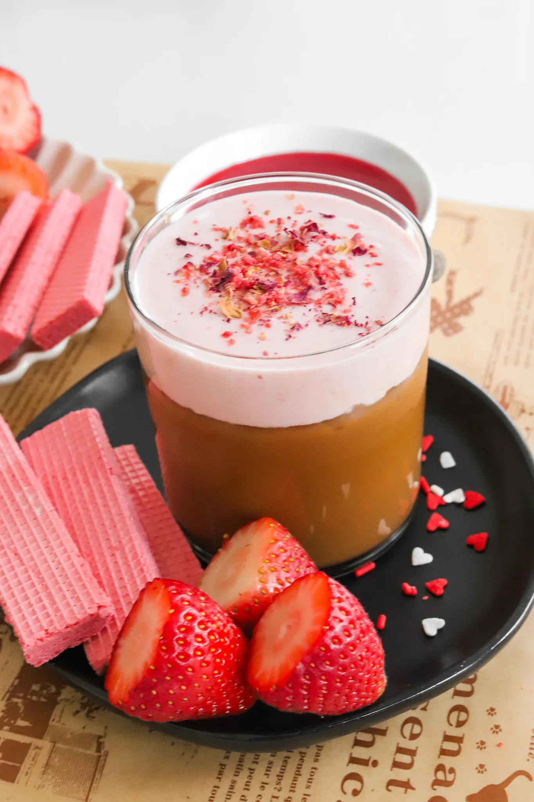

Strawberry Cold Foam is the most delicious festive topping to add to your coffee on Valentine's Day! The beautiful pink color and the creamy fruity flavor taste just like a chocolate-covered strawberry. Let's make it at home and even better than Starbucks!
Strawberry Cold Foam is the most delicious festive topping to add to your coffee on Valentine's Day! The beautiful pink color and the creamy fruity flavor taste just like a chocolate-covered strawberry. Let's make it at home and even better than Starbucks!
Did you know it's so easy to make strawberry syrup from scratch? Of course you can use store-bought strawberry syrup like Torani or even the Hershey's one used for ice cream sundaes. But it's even better to make it yourself and it's super simple. You can also use any syrup leftovers on pancakes, waffles, or ice cream.
The best part is it all comes together in one pot. Just add all the ingredients above to a pot and cook the strawberries down until softened. You can also use fresh strawberries but frozen is easier! Once the strawberries are softened, mash them down, and keep simmering until a thick syrup forms. Strain out the pulp and transfer the syrup to a jar.
I definitely recommend having a handheld electric whisk to make the process a lot easier and faster. Add the heavy cream, milk, and vanilla extract. You can also add vanilla syrup instead of vanilla extract if you want it to be sweeter. Combine together with the whisk until thick and airy. Mix in the strawberry syrup now until it has a light pink hue and there you have strawberry vanilla cold foam! It basically tastes like a light strawberry milkshake.
Now let's get to the actual coffee part! Start by brewing some shots of espresso to make a latte. Get a large cup for iced drinks and add the syrup to the bottom. You can either use white mocha sauce like Starbucks does or use a regular chocolate mocha sauce. You can also sweeten the drink with vanilla syrup or whatever flavoring you like. You can purchase white mocha sauce at the store or online or just make the copycat version from the blog!
Once you have the desired amount of sauce/syrup, add the shots of espresso and mix together to incorporate. Then add ice and your milk of choice in a latte and top with the strawberry cold foam. This is completely optional but garnish the top with crushed freeze-dried strawberries to enjoy!
If you tried this recipe and loved it, drop by down below and let me know how you liked it with a rating and comment! Feel free to also leave a question there about this recipe and I'll get right back to it.